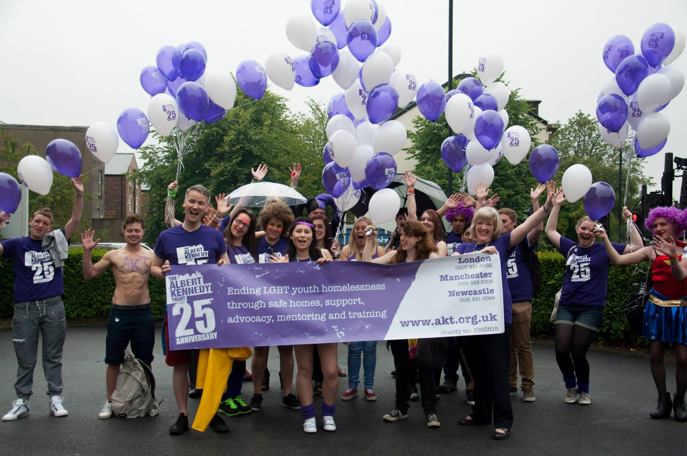

We support people in London, Manchester and Newcastle who are 25 or younger, and identify as Lesbian, Gay, Bisexual, Trans, Queer, Questioning or Intersex, find a safe place to live.
If you are Street homeless, Living in a hostile environment, or Homeless and sofa surfing Contact us now.

Your safety is our priority. When we can’t help you to stay safely at home, we may be able to help find you a secure and supportive place to stay.
Our Purple Door project has a mix of emergency, medium and long term accommodation in London, Manchester and Newcastle.
This includes our Independent Living project in Newcastle and Northumberland which offers a mix of self-contained flats and bedsits for up to 18 months.
Our Supported Lodgings project has a network of volunteer carers in London and Manchester who can provide a room in a safe home and family environment.
AKT also works with housing providers in London, Manchester & Newcastle who may also be able to meet your need for safe housing. Throughout your stay with AKT we will help you get your life back on track and move on.
Living on your own is tough! We may be able to support you with moving onto independent living by helping reduce costs.
|
|
We run a whole range of life skills and tenancy training, including:
During these sessions you will learn new skills, gain qualifications and meet other young people who understand what you are going through.
"Right now I’ve got my own place and I’m retaking my GCSEs. Without the help from The Albert Kennedy Trust I don’t think that would have been possible."
AKT has a team of trained mentors who can help you move your life forward positively Mentoring can help you with:
And lots more. The help they give will depend on what you want and need.
"I had threats of violence from relatives who see my sexuality as a cause of family shame. Despite all I have been through, I am proud to say I am making good progress."
If you feel frustrated or unable to talk to people in authority when asking for help, AKT may be able to help you get the support and services you are entitled to. Our team of staff and volunteer advocates know how to get the best for you. If you are unhappy with how you are being treated they will write letters of support, come with you to meetings, talk to decision makers and can explain your rights to make sure they aren’t ignored.
AKT runs a program of activities and events to help you:

My home life had always been quite complex and after leaving University unexpectedly, I decided that I didn’t want to return home but instead moved to Manchester.
I found myself feeling very adrift and isolated. I came to AKT as I felt like I had nobody to talk to and as an LGBT organisation I felt confident that they would understand and be able to help me with the problems I was having at the time.
AKT helped me by getting me involved in the mentoring scheme. This was a big thing for me as it gave me somebody to talk to about all of the things that were going on in my life and I felt as though I could talk to somebody who wouldn’t judge me or my experiences. The mentoring scheme basically gave me someone who understood what I was going through, something that I felt I did not have in Manchester.
Since working with AKT, I am proud to say that I feel much happier and confident in myself, I have successfully moved to London and have an interview for a degree at University in the next few weeks that I am thrilled about.
In an emergency our London, Manchester and Newcastle offices are contactable 10:00am to 4:30pm Monday to Friday.
London: 020 7831 6562
Manchester: 0161 228 3308
Newcastle: 0191 281 0099
Twitter: @AlbertKennedyTr
Facebook: AKT Facebook Page
Website http://www.akt.org.uk
Albert Kennedy was 16 years old when, on Sunday 30 April 1989, he tragically fell to his death from a multi-storey car park. Albert was very much loved by his family, but whilst spending some time in a children’s home he experienced rejection and homophobia from other residents, and sought solace in Manchester’s gay village.
Cath Hall, a foster carer based in Manchester, was already aware of the rejection and ejection of young Lesbian, Gay, Bisexual and Trans (LGBT) people from their family homes and was spurred to action following this tragic death.
We are grateful to the following agencies for their support: